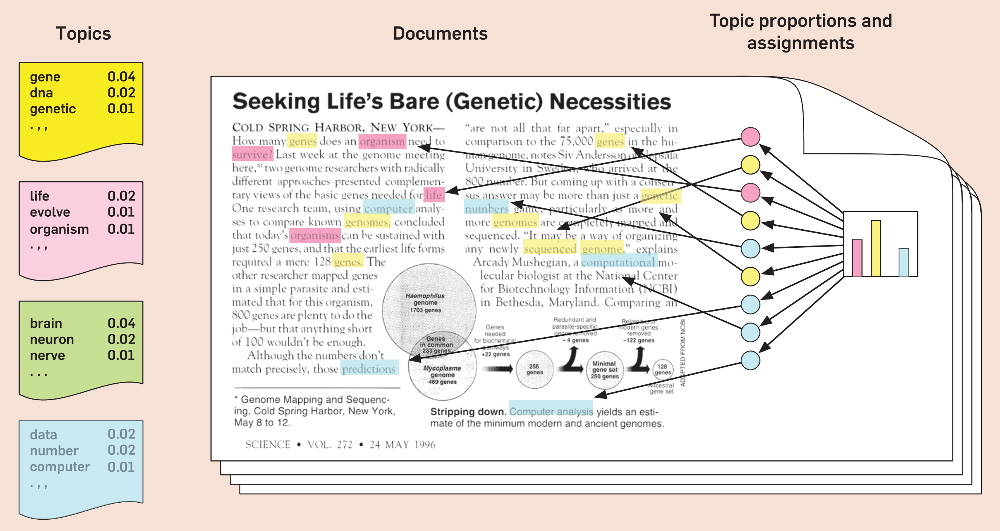
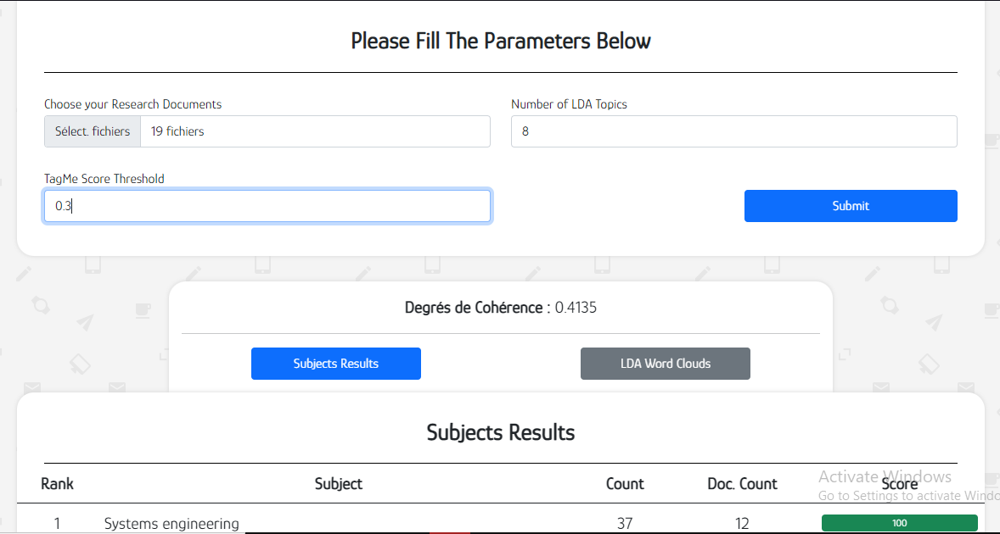
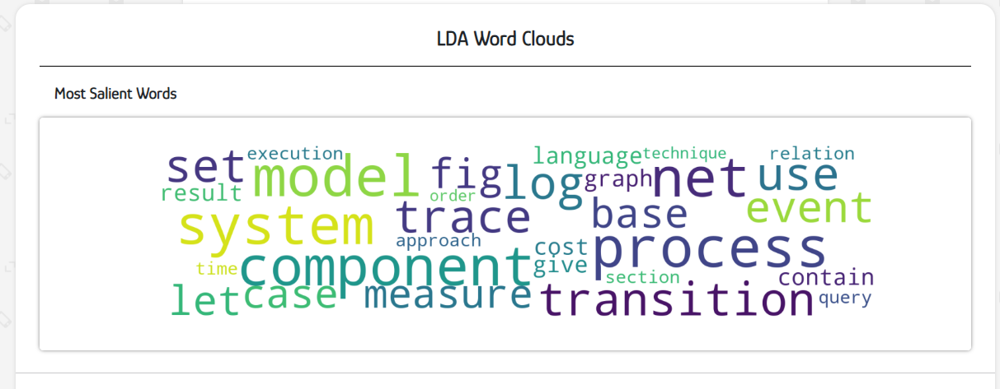

Réalisation d'un système de génération des profils chercheurs
Clickez ici pour aller vers le site
Dans ce projet, notre objectif était de construire un système de génération des profils des chercheurs en utilisant des méthodes basée sur l'apprentissage automatique et le traitement automatique des langues (NLP). A cette fin, on a tester l'efficacité de plusieurs approches, parmi eux les algorithmes supervisées (Naive Bayes et SVM) et les algorithmes non supervisées (LDA, Top2Vec) dans une analyse comparative.
Le résultat final de cette étude était la conception et la construction d'un système de génération de profils chercheurs basée sur un algorithme de topic modeling (LDA), qui extrait les mots clés représentant les compétences d'un chercheur a partir du contenu de ses articles scientifiques.
- Application des algorithmes d'apprentissage automatique pour résoudre un problème.
- Implémentation des algorithmes de traitement automatique des langues (NLP).
- L'utilisation des outils de développement d'apprentissage automatique Python (Spacy, Gensim, Wordcloud etc...).
Technologies:
- - Python
- - Django
- - Html
- - Css
- - BootStrap
- - Gensim
- - Spacy
Formulaire des documents du chercheur

Profil du chercheur

Les mots clés correspondants aux compétences du chercheur
